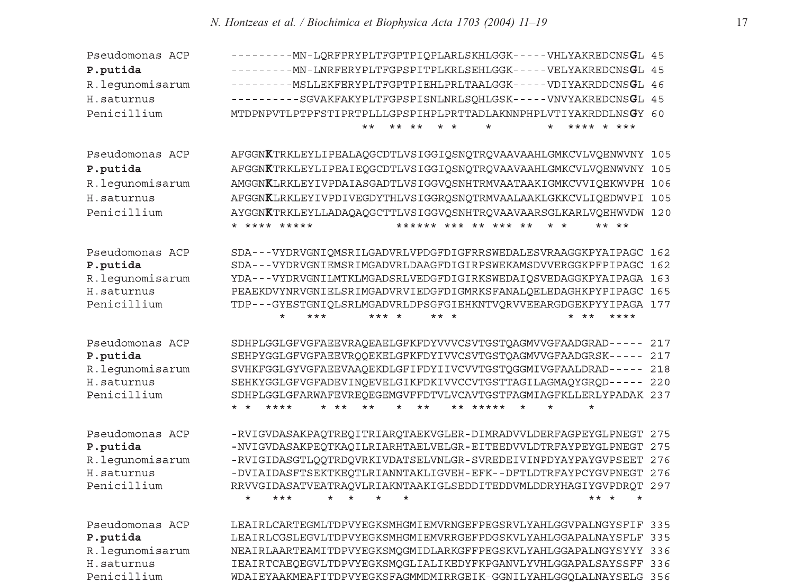
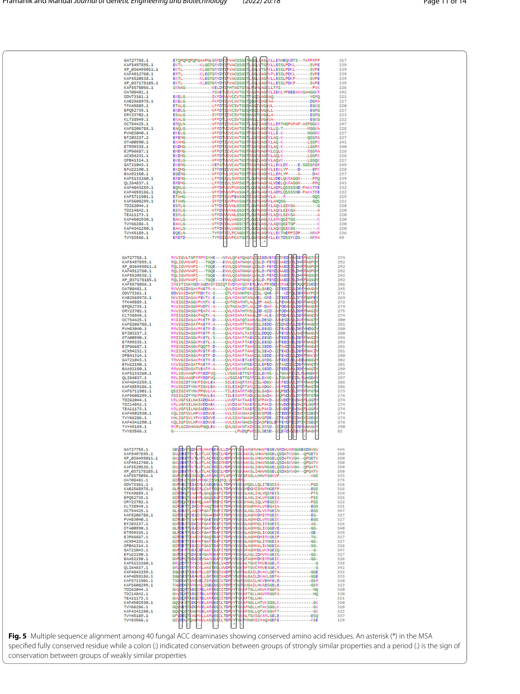
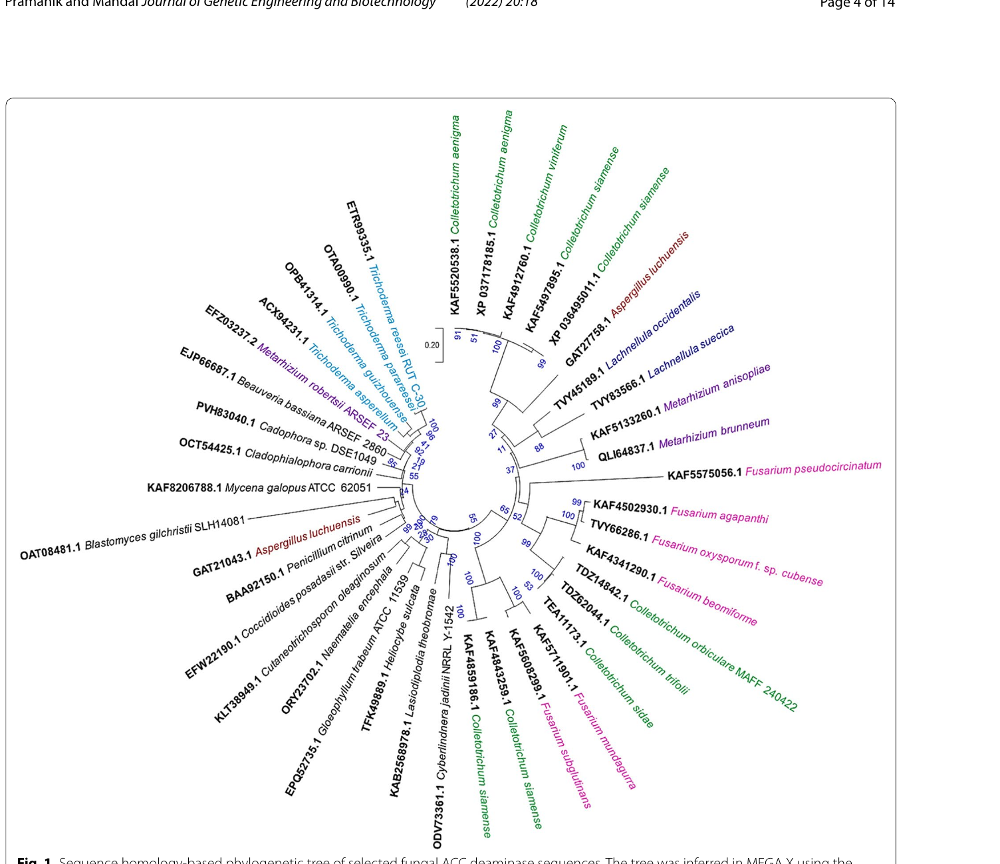
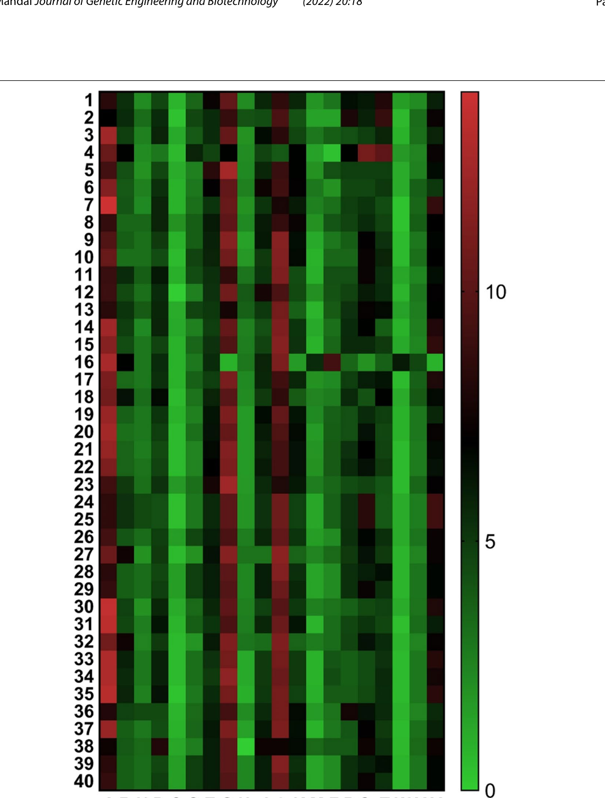
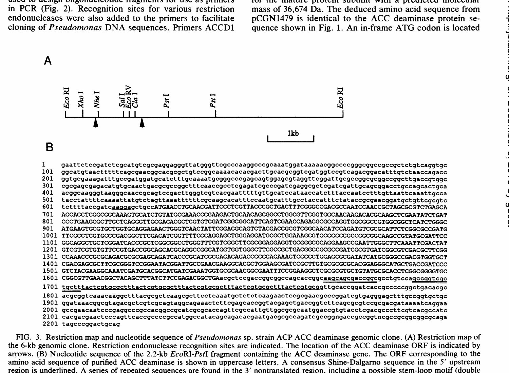

Annotated sequence — 338 aa
PLP modified residue (Schiff base)
ACT active site
BND binding site
MUT mutagenesis
conserved motif / loop
— hover any residue for details
Multiple sequence alignment & phylogeny
Cross-organism alignments and fungal-isoform phylogenetics anchor the UW4 residue numbering used throughout this knowledgebase.





Feature table
| Type | Position | Description | Details |
|---|
Cross-organism residue map
| Functional role | Pseudomonas sp. UW4 | Pseudomonas sp. ACP | H. saturnus (yeast) | Tomato D-CDes | Conservation |
|---|---|---|---|---|---|
| PLP Schiff base lysine | Lys51 | Lys51 | Lys51 | Lys117 | Strictly conserved |
| ACT Catalytic nucleophile | Tyr294 | Tyr294 | Tyr295 | Tyr357 | Strictly conserved |
| ACT Charge-relay Tyr | Tyr268 | Tyr268 | Tyr269 | Tyr282 (modeled) | Strictly conserved |
| ACT Carboxylate H-bond Ser | Ser78 | Ser78 | Ser78 | Ser144 | Conserved (S→A inactive) |
| ACT PLP pyridinium N partner | Glu295 | Glu295 | Glu296 | Ser358 * | Specificity switch |
| BND PLP packing / specificity | Leu322 | Leu322 | Leu323 | Thr386 * | Specificity switch |
| BND Substrate gate | Gly44 | Gly44 | Gly44 | — | Conserved in bacterial AcdS |
| BND Iodoacetamide-sensitive Cys | Cys162 | Cys162 | — | — | Bacterial AcdS |
* Specificity switch. The pair Glu295 / Leu322 (UW4 AcdS) versus
Ser358 / Thr386 (tomato D-cysteine desulfhydrase) controls whether the enzyme
cleaves the ACC cyclopropane ring or performs D-cysteine β-elimination. The UW4 double mutant
E295S/L322T abolishes ACC-deaminase activity and gives ~10-fold gain of
D-CDes activity; the reciprocal tomato S358E/T386L mutant gains ACCD activity ~50-fold over
wild type. Todorovic & Glick, Planta 2008.
FASTA
Canonical reference sequence — UW4 AcdS, cross-verified between UniProt Q5PWZ8 and NCBI AFY21346.1.
>sp|Q5PWZ8|1A1D_PSEPU 1-aminocyclopropane-1-carboxylate deaminase OS=Pseudomonas sp. UW4 GN=acdS MNLNRFERYPLTFGPSPITPLKRLSEHLGGKVELYAKREDCNSGLAFGGN KTRKLEYLIPEAIEQGCDTLVSIGGIQSNQTRQVAAVAAHLGMKCVLVQE NWVNYSDAVYDRVGNIEMSRIMGADVRLDAAGFDIGIRPSWEKAMSDVVE RGGKPFPIPAGCSEHPYGGLGFVGFAEEVRQQEKELGFKFDYIVVCSVTG STQAGMVVGFAADGRSKNVIGVDASAKPEQTKAQILRIARHTAELVELGR EITEEDVVLDTRFAYPEYGLPNEGTLEAIRLCGSLEGVLTDPVYEGKSMH GMIEMVRRGEFPDGSKVLYAHLGGAPALNAYSFLFRNG